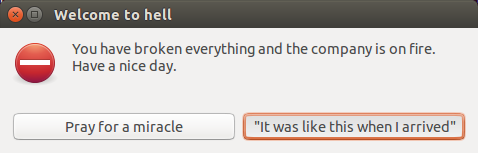

Challenge 10 - Passwords
You have proudly worked for almost five years in a leading technological company. One day, you realized that the disk of your main employee authentication server was becoming full, and you started deleting some unnecessary stuff until you had enough space to install some videogames. However, five minutes later you were informed that the authentication had stopped working for all the company's employees.
After some investigation, you realize that you have accidentally deleted the whole password database from the disk, and that all its backups met the same fate every time you previously wanted to install more videogames.

Since you don't want anyone to discover that you've been using one of the company's most important servers to play videogames, you somehow need to rebuild the passwords. Thankfully, all those passwords were obtained from the password generation script and you have its source code downloaded, so maybe you can save yourself from being fired and from having to reinstall all your games on another company's server.
Once you download the password generation history, you realize that most of them were generated using older versions of the script. What's more, many users have their passwords regenerated. You know that a new version of the script was generated every day, with no exceptions, and that some of the commits might have been moved onto branches or even accidentally deleted.
But time is running out; can you find all the scripts and recover all the passwords?
Input
In the first line, an integer T indicates the number of cases.
Each case represents a user's password history, and is described by N+1 lines. The first line of each case contains the word U, corresponding to its userid, and the integer N, representing the number of entries that exist for that user. After that, N lines follow containing the string D, which represents the generation date in yyyy-mm-dd format and the integer C, representing the number of times that user password was changed on that date.
Output
For each case, a line starting with "Case #x: " followed by the most recent password for that user.
Limits
- 1 ≤ N ≤ 1800
- 1 ≤ C ≤ 10000
- 2012/03/01 ≤ D ≤ 2017/01/31
Sample Input
3 aaaaaa 1 2017-01-31 1 abcdef 1 2017-01-31 2 xoajoj 2 2013-05-19 1 2016-08-20 1
Sample Output
Case #1: !i'M]7Yumu Case #2: 1!_5yu3Ok1 Case #3: WSUmXS~*oR